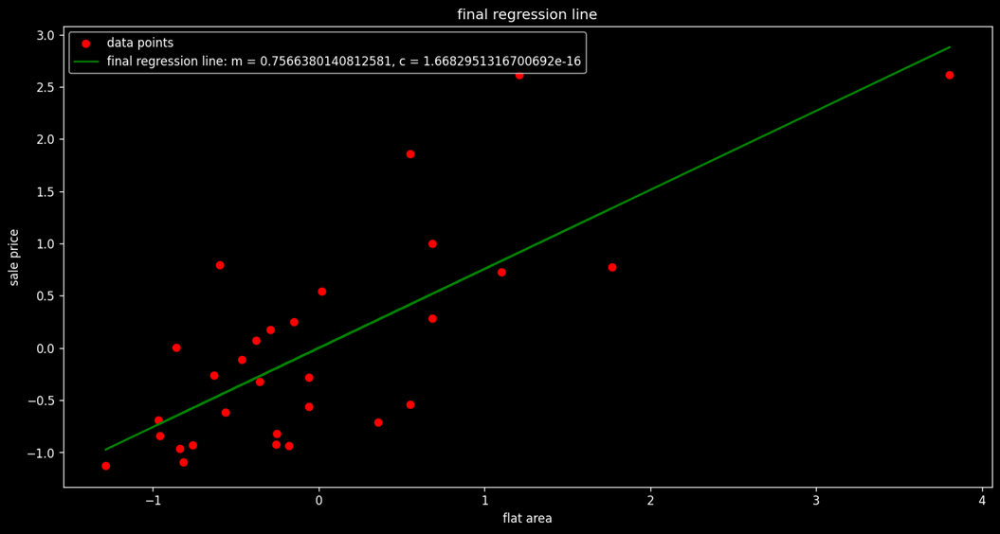
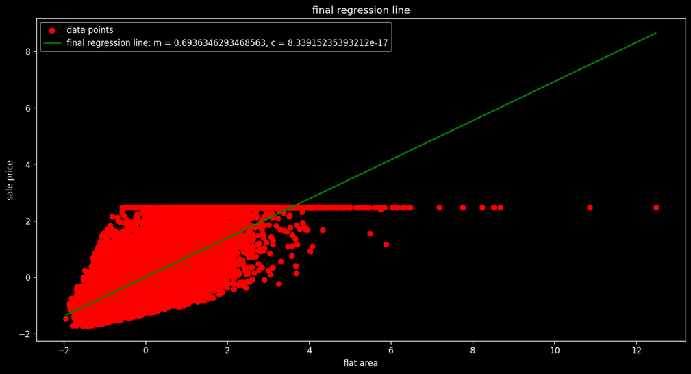

Introduction
The Simple Model
The simplest model that can be created will predict that the target will have mean values. This model, although looking fine, has the capacity to destroy the predictive accuracy of the model as average values cannot predict the large values and also very small target values.
Overcoming the Issue
To overcome this, we can use more filters like using the average of gradings of the target, etc. In our example, we first created a model based on the average of sale prices and then a model based on the average of sale prices with respect to grades.
Residual Plotting
Scatter plots are created by the method of residual plotting. Residual plotting is nothing but a scatter plot of residual values.
Residual values = predicted value - actual value
Creating Residuals
In our example, both mean sales residuals and grade mean sales residuals are created and then visualized in two different scatter plots against a line of 0 residual, i.e., a line representing 100% accurate predictions (green).
Model Evaluation Metrics
MODEL EVALUATION METRICS
To check how good or bad our model predictions are, we use model evaluation metrics:
- Mean Absolute Error (MAE)
- Mean Square Error (MSE)
- Root Mean Square Error (RMSE)
MEAN ABSOLUTE ERROR (MAE)
We know that residual = prediction – actual.
Mean Error = \(\frac{Error_1 + Error_2 + Error_3 + \dots}{\text{Total number of data points}}\)
Mean Absolute Error = $$ \text{Mean Absolute Error} = \frac{1}{n} \sum_{i=0}^{n-1} |X_i - X_m| $$
The Mean Absolute Error tells us how far, on average, the actual point is expected to lie from the predicted point.
MEAN SQUARE ERROR (MSE)
Mean Square Error = $$ \text{Mean Square Error} = \frac{1}{n} \sum_{i=0}^{n-1} (X_i - X_m)^2 $$
This turns all the differences between the actual and the predicted into a positive quantity. It incurs an extra penalty for larger differences between the actual and predicted values.
ROOT MEAN SQUARE ERROR (RMSE)
Root Mean Square Error = $$ \text{Root Mean Square Error} = \sqrt{\frac{1}{n} \sum_{i=0}^{n-1} (X_i - X_m)^2} $$
Large errors are penalized, but the scale of error is closer to that of the Mean Absolute Error.
R2 - EVALUATION METRIC
It gives us the relative error of a regression model with respect to the simple mean regression model.
R2 = 1 - $$ \frac{\sum_{i=0}^{n} (Y_{pi} - Y_i)^2}{\sum_{i=0}^{n} (Y_{mi} - Y_i)^2} $$
R2 = 1 - \frac{n \times \text{MSE of simple mean model}}{n \times \text{MSE of regression model we want to evaluate}}
R2 = 1 - \frac{\text{MSE of simple mean model}}{\text{MSE of regression model we want to evaluate}}
The ratio is “The mean square error of the regression model we want to evaluate over the mean square error of the simple mean regression model”.
The lower the ratio, the better the model.
For a perfect model (100% accurate predictions), R2 = 1.
For a mean prediction model (Yp = Ym), R2 = 0.
For any model that is better than a mean prediction model but not a perfect model, \( 0 < R^2 < 1 \).
In reality, \( -\infty < R^2 < 1 \).
A negative R-squared means the predicted model is worse than the mean model.
INTERPRETATION OF R2
R2 explains the degree to which your input variable explains the variation of your target or output variable. For example, an R2 value of 0.8 means 80% of the variation in the output variable is explained by the input variables.
The higher the R2, the more the variation explained by the input variable, and hence, the better the model.
On adding more variables, the R2 value will remain the same or increase, even if the variables have no role in improving the model.
ADJUSTED R2
To solve this problem, we have another metric evaluation called the Adjusted R2. This penalizes the result for adding variables that do not improve the existing model.
Linear Regression
- Linear regression models the linear relationship between dependent and independent variables.
- In these models, we try to find a straight line which fits our data well, usually in a scatter plot.
- The linear regression model is nothing but the line.
- The best model is the line which fits the data points with the least error.
- Now since we are dealing with a straight line, we must try to mathematically analyze it.
- The equation of a straight line is:
$$ y = mx + c $$
where:
- \( y \) = dependent variable (Output)
- \( x \) = independent variable (input)
- \( m \) = slope of the line
- \( c \) = y-intercept of the line (point at which the line cuts the y-axis)
- Different lines with the same slope but different intercepts are parallel to each other. Changing the intercept just shifts the line upward or downward.
- Different lines with the same intercept but different slopes have the same point of concurrence but are at different angles from the axes.
- NOTE: Slope is the rate at which \( y \) increases with respect to \( x \).
Cost Function Curve
Model Fitting for Sale Price Data
In our example, we are trying to create a regression model that best fits the data plot of Sale Price vs. Flat Area. Here's how we approach it:
1. Trial and Error Method
Initially, we plot two different graphs using a hit-and-trial method to determine the best-fitting model. Below are the results:
Note that the cost function is simply the Mean Square Error (MSE) of the model. As visible in Plot 2, it has a lower MSE, but it's still not a good fit. Next, we attempt to automate the process by creating a new data frame with the Slope and corresponding Cost (MSE) values. This new curve, Cost vs. Slope, is referred to as the Cost Function Curve.
2. Convex Curve
The Cost Function Curve initially has a high MSE. As we adjust the slope, the cost keeps decreasing until it reaches a minimum value, after which it starts increasing again. This type of curve is called a Convex Curve.
In convex curves, there is only one minimum value, known as the Global Minimum.
In contrast, non-convex curves may have multiple minimum points, known as Local Minimums.
3. Finding the Best Slope
From the Cost Function Curve, we can determine the best slope for our regression model fitting. Here, the intercept is kept constant.
4. Three-Dimensional Graph
Now, if we vary both the intercept and the slope simultaneously, we will get a three-dimensional graph. In this graph, the minimum value depends on both the slope and the intercept.
5. Finding the Cost Function with Respect to Changing Intercept
We repeat the same process for finding the cost function curve with respect to changing intercept values.
6. Repeated Cycle for Optimal Values
While we might obtain a minimum value of intercept, this does not necessarily mean that we've found the best pair of slope (m) and intercept (c). In both analyses, one of these values was kept constant. When the cycle is repeated several times, it converges to the most optimum values for both m and c.
For our model, the best-fit equation is:
y = 219x + 39428
Here, m = 219 and c = 39428.
7. Limitation with Multiple Input Variables
If the data involves more than one input variable, the cyclic process becomes less practical. This method doesn't scale well when more dimensions are added.
8. Gradient Descent Algorithm
To overcome the limitations of the manual cyclic process, we use the Gradient Descent Algorithm. This algorithm helps us efficiently find the optimal slope and intercept values, especially when there are multiple input variables.
Gradient Descent
Gradient descent is an optimization algorithm that works iteratively and aims to find the minimum value of a convex function with respect to a set of parameters.
STEP 1: RANDOM INITIALIZATION
Here we have two parameters: slope, \( m \), and intercept, \( c \).
Both can be initialized to a small value, say 0, but initializing the intercept to the intercept of the mean regression model is preferred.
In our example, we used \( m = 0.1 \) and \( c = \) mean of sale prices.
STEP 2: GENERATE PREDICTIONS
Now we will be predicting values using the equation: \( Y_p = mX + c \)
Here, \( Y_p \) is the sale price and \( X \) is the flat area.
STEP 3: CALCULATING THE COST
We will be using Mean Squared Error as the cost function and will represent it by \( T \).
Clearly, the cost function depends on \( m \) and \( c \).
STEP 4: UPDATING PARAMETERS
Updating of variables takes place according to the following formulas:
\( m_{\text{new}} = m_{\text{old}} - \alpha G_m \)
\( C_{\text{new}} = C_{\text{old}} - \alpha G_c \)
Here, \( Z \) can be positive or negative. To find \( Z \), we use the concept of partial differentiation.
Partial differentiation of the “cost-function curve with variation of \( m \)” with respect to \( m \) will give the slope of the tangent function to the curve.
If the slope is positive, then the tangent is to the right of the minimum point; hence, \( Z \) will be positive in order to reach the minimum point.
If the slope is negative, then the tangent is to the left of the minimum point; hence, \( Z \) should be negative in order to reach the minimum point.
Conclusion: \( Z \) has the same sign as the slope.
Working Rule of Gradient Descent Algorithm
We have the update statements as:
\( m_{\text{new}} = m_{\text{old}} - \alpha G_m \)
\( C_{\text{new}} = C_{\text{old}} - \alpha G_c \)
MSE (Mean Squared Error) Calculation
MSE can be defined as:
\[ MSE = \frac{1}{n} \sum_{i=1}^{n} (y_{pi} - y_i)^2 \]
Putting \( MSE = T(m, c) \) and \( y_{pi} = mx_i + c \), we get:
\[ T = \frac{1}{n} \sum (mx_i + c - y_i)^2 \]
Partial Differentiation of the Cost Function
Now, partial differentiating the cost function \( T \) with respect to \( m \) and \( c \) gives us the respective gradient as:
\[ G_m = \frac{\partial T}{\partial m} = \frac{2}{n} \sum_{i=1}^{n} x_i (mx_i + c - y_i) \]
\[ G_c = \frac{\partial T}{\partial c} = \frac{2}{n} \sum_{i=1}^{n} (mx_i + c - y_i) \]
Here \( G_m \) and \( G_c \) are the gradients of the cost function with respect to \( m \) and \( c \), respectively.
Update Rules
Let \( Z_m = \alpha G_m \), then:
\( m_{\text{new}} = m_{\text{old}} - \alpha G_m \)
Let \( Z_c = \alpha G_c \), then:
\( C_{\text{new}} = C_{\text{old}} - \alpha G_c \)
Here, \( \alpha \) (learning rate) is a moderator that controls the process of updating the parameters:
- If \( \alpha \) is high, the cost function can bounce out of the range.
- If \( \alpha \) is low, the cost function might take numerous iterations to converge.
Convergence Condition
The next step of the algorithm is to check our prediction’s reliability:
If \( \text{previous value of cost function} - \text{new value of cost function} < \text{threshold value} \) (order of \( 10^{-x} \)),
Then we say that the algorithm has converged.
Otherwise, we repeat the process after updating the parameters.
Application of Gradient Descent Algorithm
Now we apply the Gradient Descent Algorithm in Python in our given dataset in two ways:
- First, we apply it on the first 30 data values.

- Second, we apply it on the complete dataset.

The python code [Project1
LINK] of implementation of the Gradient Descent Algorithm
is given below. We have defined function to
- Initialize parameter
- Generate predictions
- Compute cost or MSE
- Gradient generation
- Parameter updating
- Result generator
Assumptions of Linear Regression
Linear Relationship
- The target and independent variable must follow a linear relationship. It does not have to be strictly linear (i.e., correlation = 1), but it should follow the fundamental property of a line.
- The fundamental property of a straight line states that \( Y \) changes with \( X \), and for every change in \( \Delta X \), the quantum change in \( Y \), i.e., \( \Delta Y \), should be similar irrespective of the value of \( X \).
- Therefore, to apply linear regression, the rate of change of \( Y \) with respect to \( X \) should be almost constant.
- To deal with non-linear data, we convert it into linear data using variable transformation operations like squaring, square root, logarithms, etc.
Homoscedasticity
- Homoscedasticity refers to the constant variance of error terms.
- The opposite of this concept is Heteroscedasticity, which may arise due to either non-linearity of data or the presence of outliers.
Normal Distribution of Error
- Error terms with respect to the regression line should be normally distributed.
- Errors that do not follow a normal distribution cause parameter estimation to be unstable, ultimately resulting in misleading coefficients.
- To address this issue, we scale the data to a linear scale using any appropriate transformation.
No Correlation Between Error Terms
- The condition where there is an inherent pattern between error terms is called Auto Correlation.
- Strong correlation between error terms is typically found in time series data.
- This type of correlation exists when previous values of \( Y \) affect the next value of \( Y \), which is not accounted for in the linear regression model.
- As a result, misinterpretations in the model's outcome may occur.
Multicollinearity
- When there is collinearity between two independent variables of high order (i.e., greater than 0.5), then the variation in the target variable explained by one variable is already explained by the other variable.
- In such cases, we keep only one variable and eliminate the others to avoid redundancy.
- Multicollinearity among independent variables must be removed to ensure model accuracy.
- To decide which variable to remove, we use the concept of Variance Inflation Factor (VIF).
Variance Inflation Factor (VIF)
-
VIF is used for diagnosing multicollinearity.
-
It quantifies the correlation between two independent variables.
-
The higher the VIF value associated with any independent variable, the more correlated this variable is with other independent variables in the dataset.
-
For instance, let there be 9 independent variables in the dataset: \( V_1, V_2, V_3, V_4, V_5, V_6, V_7, V_8, V_9 \).
-
To calculate the VIF of \( V_1 \) with respect to all other variables, we treat \( V_1 \) as the dependent variable and all other variables as independent variables.
-
Next, we attempt to predict \( V_1 \) using the other independent variables and calculate the corresponding \( R^2 \) score.
-
We then calculate the VIF using the formula:
\( \text{VIF} = \frac{1}{1 - R^2} \)
-
Clearly, a lower \( R^2 \) implies a lower VIF.
-
A low VIF means that the independent variable is not strongly correlated with other independent variables.
-
A VIF value of 5 is considered a good threshold.
-
If \( \text{VIF} > 5 \), it suggests that the variable is very well explained by other variables and can be excluded from the model.
Steps of Linear Regression
Steps in Implementing Linear Regression Model
- Importing libraries and dataset
- Checking for multicollinearity and removing it
- Scaling the dataset
- Creating test and train partitions
- Implementing the linear regression model using Scikit-learn
- Generating predictions over the test set
- Evaluating the model
- Plotting the residuals
- Verifying the assumptions of linear regression
- Visualizing the coefficients to interpret the model result
Outcome of Linear Regression
Before importing the dataset, it must be prepared under the following steps: Preprocessing
- Exploring the target and the independent variables
- Treating the outliers and missing values in independent and target variables
- Transforming the categorical variables into numerical variables using dummy encoding
The implementation of these steps is described in my Python .ipynb notebook. Click on the icon to access it.
Some Important Interpretations from the Models:
- Most of the residuals are densely populated between limits 200,000 and -200,000, so we can say residuals are normally distributed.
- However, the residual plot resembles neither a cone shape nor a pipe shape, so there is still room for improvement in the data.
- Additionally, there are some outliers.
Residual Plot Interpretation:
- This is a plot between residual (error) and their frequency counts.
- The residuals are approximately normal, so one of our assumptions of linear regression holds true.
- Note that there are still some outliers on the far right.
Outcome of Regression Modelling:
- Zip code has the highest coefficient, indicating that location plays a major role in determining sale price.
- The area of the house and overall grade also have a significant impact on the sale price.
- Year since renovation is negatively significant, meaning customers are more likely to buy houses that are recently renovated.
- Longitude is negatively significant, while Latitude is positively significant, suggesting a geographical dependency in the sale prices.